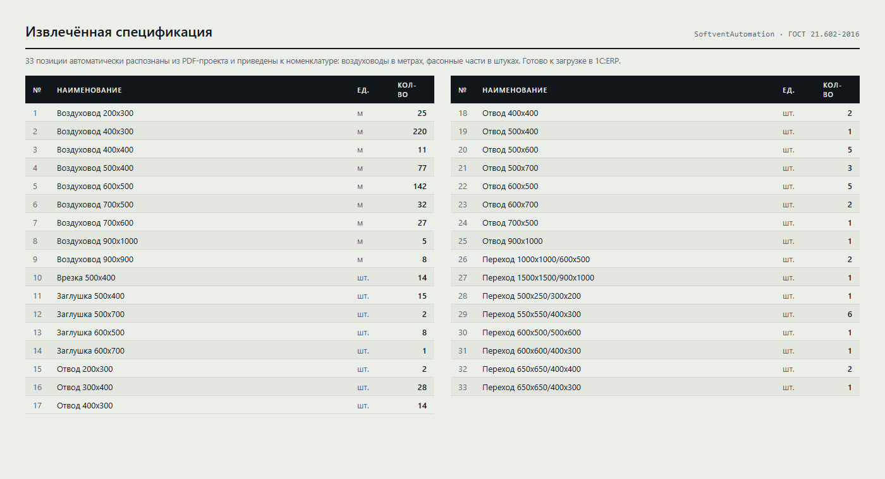

Automation · 1C:ERP
2025
Reads a multi-page ventilation design PDF, locates the bill of materials laid out to GOST 21.602-2016, pulls out the ducting and maps it onto the item catalogue of 1C:ERP Softvent — turning metres of run into pieces of stock length.
01 · The problem
A duct manufacturer receives design documentation from the client as a single PDF assembled from A3 sheets. Inside are floor plans, axonometric diagrams, a table of heating and ventilation system parameters, and — somewhere near the end — the bill of materials laid out to GOST 21.602-2016, the Russian standard for ventilation drawings.
To quote the job, a sales engineer has to retype every size into 1C:ERP Softvent: material, sheet-metal gauge, width, height, quantity. A typical project runs to several dozen line items, and each one is six mouse and keyboard actions.
The tedious part is not the volume, it is the units. The designer writes “duct 400×300 — 220 m”, because what matters to them is the length of the run. The shop floor cuts sheet metal into fixed-length sections, so the same item lives in the ERP catalogue as “220 m → 190 pcs”. That conversion is normally done in someone's head, and that is exactly where the errors appear — usually discovered in the warehouse.
The system removes both chores at once: find the bill of materials inside a drawing, and restate it in the units production actually works in.
02 · How it works
The pipeline runs one way: PDF in, JSON out. Every intermediate result is written to disk so that each stage can be inspected by eye without running the rest.
PyPDF2 — fast, and it never touches the vector
graphics. Each page scores against keyword rules and is assigned a type:
specification, hovs (the system-parameters sheet),
axonometry, technical, other. Scores rather than
first-match, because an axonometric sheet almost always contains the word
“characteristic” and a parameters sheet contains the word “fan”.
PdfWriter emits separate specification.pdf,
hovs.pdf and axonometry.pdf. This is not decoration: the
expensive table extraction then runs only over the pages that matter, not all twenty-nine.
pdfplumber.extract_tables() — it handles Cyrillic best.
If no table is found, camelot takes over in lattice mode.
Camelot is imported inside a try/except and degrades silently, because it
drags in OpenCV and Ghostscript, which may not exist on a sales engineer's machine.
Why not OCR. Every sheet in the project is vector art with real text in it. OCR would add minutes per page and a fresh class of errors (7 vs 1, Cyrillic х vs Latin x) for data that is already in the file. OCR stays on the roadmap for scanned documents only.
03 · The hard part
GOST 21.602-2016 gives the bill of materials nine columns: item number, description and technical characteristics, type and mark, product code, manufacturer, unit of measure, quantity, unit mass, remarks. Almost none of that structure survives into the PDF — the sheet was exported from CAD as a drawing, not as a document.
An A3 sheet (1191×842 pt) also carries a title block, a revision strip and binding
margins. All of them are drawn with ruled lines, so extract_tables() dutifully
merges everything into one grid. On the real sheets this produced
21 and 23 columns instead of nine; the useful data sat in columns 6–20
and the rest came back empty.
Margin labels are typeset vertically. In the extracted table they show up as ordinary
values, only backwards: онавосалгоС is “Согласовано” (approved) read in
reverse. Formally these are valid strings; the only way to spot them is that they match
no expected field.
Every caption in CAD is a separate text object, and extraction inserts no space between
them: Кодизделия (“productcode”), Металлдлякрепления
(“metalformounting”). The header “unit of measure” arrives hyphenated across four lines:
Ед./изме-/ре-/ния.
A fire-damper description wraps onto two lines, and the tail of the second line grows
straight into the “type and mark” value:
…fire rating 90 minКПУ-1Н-О-100. Parsed as flat page text, that line matches
nothing. This is precisely why extraction works over table cells rather than text lines.
“Duct fittings”, “Air distribution devices”, “Duct insulation materials”, “Equipment” arrive as rows with one populated cell out of twenty-one. They must be skipped rather than parsed, otherwise they become line items with a quantity of zero.
Because of the wrapping and the lost spaces, column mapping is done by lowercase
substring (“кол” for quantity, “ед” for unit,
“наимен” for description), and reading a row falls through a chain of
fallback keys. Exact header matching worked on none of the real sheets.
04 · Code
# starting scores scores = {'specification': 0, 'hovs': 0, 'axonometry': 0, 'technical': 0, 'other': 0} if 'СПЕЦИФИКА' in text_upper or 'ВЕДОМОСТ' in text_upper: scores['specification'] += 3 if any(kw in text_upper for kw in ['ПОЗ.', 'НАИМЕНОВАНИЕ', 'ЕДИНИЦА ИЗМЕРЕНИЯ', 'КОД ИЗДЕЛИЯ']): scores['specification'] += 2 if 'ХАРАКТЕРИСТИКА' in text_upper and any(kw in text_upper for kw in ['ВЕНТИЛ', 'ХОВС']): scores['hovs'] += 4 # an actual table outweighs any keyword if page_tables: for table in page_tables: if self.parser._is_specification_table(table): scores['specification'] += 5 break # tie-break order: specification > hovs > axonometry > ... ordered = ['specification', 'hovs', 'axonometry', 'technical', 'other'] best = max(ordered, key=lambda k: (scores[k], -ordered.index(k))) return best if scores[best] > 0 else 'other'
The first version returned the type of the first keyword it hit — and filed the bill of materials under “system parameters”, because it contains the word “characteristic”. Scores plus an explicit priority order resolve the conflict predictably, and the presence of a real table is weighted at 5 so it beats any single word.
for start in sorted(spec_pages): i = start + 1 while i <= max_page: # hit a sheet belonging to another section — stop if i in pages_by_type['hovs'] or i in pages_by_type['axonometry'] \ or i in pages_by_type['technical']: break t = (page_texts.get(i) or '').upper() # continuation smells like units of measure or dense digits if any(u in t for u in [' ШТ', ' М²', ' М2', ' КГ']) \ or sum(ch.isdigit() for ch in t) > 50: spec_pages.add(i) i += 1 continue break
The second and third sheets of a bill of materials never repeat the word “specification” — they only repeat the table header, so keyword matching loses them. This uses a different property instead: a bill-of-materials page is a page dense with numbers and units. The walk stops at the first sheet of another type so it cannot swallow the rest of the album.
if item.unit in ['м', 'м.п.', 'мп']: # metres of run → mm → pieces of 1160 mm, always rounded up total_length = item.quantity * 1000 our_quantity = int(total_length / 1160 + 0.99) elif item.unit in ['м2', 'м²']: # developed sheet area → length, via the section perimeter if item.width and item.height: perimeter = (item.width + item.height) * 2 / 1000 total_length = item.quantity / perimeter * 1000 our_quantity = int(total_length / 1160 + 0.99) else: our_quantity = 0 else: our_quantity = int(item.quantity)
This is the case where the rule matters more than the code. 1160 mm is the working length of a duct section at this plant; it is fixed as a constant and the whole catalogue is counted from it. The rounding is always up — half a section still occupies a whole one in the warehouse. The separate m² branch exists because some designers state volume as developed sheet area; the run length then has to be recovered through the section perimeter, and without dimensions parsed out of the description the item cannot be converted at all.
pyautogui.FAILSAFE = True # mouse into a screen corner = abort pyautogui.PAUSE = 0.5 # gives 1C time to repaint the form keyboard.add_hotkey('ctrl+shift+p', self.pause_resume) keyboard.add_hotkey('ctrl+shift+s', self.emergency_stop) # the window is found by title and raised to the front win32gui.ShowWindow(self.current_window, win32con.SW_RESTORE) win32gui.SetForegroundWindow(self.current_window) FIELDS = { 'material': {'x': 300, 'y': 250}, 'thickness': {'x': 300, 'y': 290}, 'width_a': {'x': 300, 'y': 330}, 'height_b': {'x': 300, 'y': 370}, 'quantity_n': {'x': 300, 'y': 450}, }
Softvent exposes no API, so the only available interface is the screen. That is an honestly bad way to integrate, and the code is built around admitting it: an abort gesture with the mouse, two global hotkeys, a pause between actions, and a “continue / skip / stop” dialog on every input failure. The coordinates are not typed by hand — there is a calibration mode where the operator hovers over seven form elements and the program records the positions into JSON.
05 · Numbers
lines of Python across five working modules: table parser, its predecessor, ERP controller, runner and CLI
A3 sheets in the test project: plans, axonometry, system parameters and three bill-of-materials sheets
minutes for a full pass: classifying 29 pages plus table extraction
columns returned by extract_tables() on a sheet where the standard defines nine
line items in the sample bill of materials: 9 duct sizes and 24 duct fittings
of duct run in the sample — 476 pieces of 1160 mm after conversion

| Line item | As designed | 1160 mm sections |
|---|---|---|
| Duct 400×300 | 220 m | 190 pcs |
| Duct 600×500 | 142 m | 123 pcs |
| Duct 500×400 | 77 m | 67 pcs |
| Duct 700×500 | 32 m | 28 pcs |
| Duct 200×300 | 25 m | 22 pcs |
| Duct 900×1000 | 5 m | 5 pcs |
Six of the nine duct rows. It shows plainly why the rounding goes up: 5 m of run is five sections, not four and a third.
06 · What is not finished
This is a working prototype, not a delivered product. Everything below was verified against the source and the run logs, and is more useful said out loud than hidden.
ø160 (U+00F8) while the regex looks for
[ØDд] with capital Ø (U+00D8) — no match. Second, the gauge is
spelled out as “0.5 mm thick” whereas the pattern expects δ=0.5. The rows are
found, the dimensions are not, and an item like that cannot be handed to the ERP.
int(x / 1160 + 0.99) is not
math.ceil: with a fractional part below 0.01 it returns one piece short. None
of the observed volumes hit that window, but ceil is the correct expression.
convert_to_softvent_format drops anything whose
description does not contain the word “duct”. Bends, branches, end caps and reducers are
two thirds of the sample.
excel_parser.py, ui_mapper.py,
converter.py, utils/logger.py and config.yaml are
zero bytes. Excel parsing is described in the README but never written — I read the
test_spec.xlsx sample by hand. The coordinate configuration from the README is
likewise unwired; the values live as constants in the SoftventElements class.
If I were continuing this project the order would be: first a corpus of real PDFs from
different design offices as fixtures with tests over them; then a dictionary of spellings
instead of single regular expressions (a diameter is Ø, ø,
D, д and the word “diameter”); and only then back to the UI
automation. A parser without a corpus always looks like it works — on the one file it was
written against.